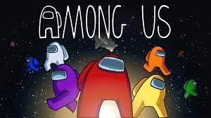

Cocinar
Antes de la pandemia estaba comenzando a interesarme por la gastronomía y cuando se suspendieron las clases
presenciales comencé a tener más tiempo para poder aprender a realizar diversos tipos de platillos. Y aunque
tenía bastante tiempo no lo aproveché completamente bien.
Actualmente no solo sigo tal cual las recetas que encuentro, comienzo a experimentar para poder llegar a
sabores distintos o sabores similares con ingredientes diferentes. Las comidas que más me gustan comer y hacer son
cualquier tipo de pastas y la pizza.
Ver Anime
Debido a que en segundo semestre la escuela aún no organizaba de manera correcta las clases a distancia,
algunos profesores no dejaban muchos trabajos, no daban clases y había bastante tiempo libre, entonces
debido a eso quise concluir Naruto, uno de los animes de los cuales más disfrutaba en mi infancia, comencé
a explorar otros animes y descubrir páginas que distribuían el contenido.
Como las plataformas Crunchyroll y Funimation no son gratuitas comencé a ver cualquier cosa que me llamara la atención
en AnimeFLV, el inconveniente es que no hay total acceso a todos los animes con doblaje latino, pero no esta nada mal
para ser algo completamente gratuito.
Videojuegos
No tengo mucho tiempo libre pero una parte de el lo utilizo para jugar ciertos juegos para PS4 como Fortnite o Warzone
con mi duo y uno de mis mejores amigos, Josue.
En diciembre del año pasado comencé a explorar algunos juegos para celular con mis amigos como Call of Duty Mobile, Among Us,
Roblox y Minecraft.

Aunque hay gran diversidad de juegos, con mis amigos más cercanos jugamos Free Fire que a pesar no ser uno de los mejores, cuando
te acostumbras. Los gráficos no son los mejores y es un Pay to win, lo cual si no
tienes dinero, lo único que tienes son tus habilidad y otros jugadores tienen ventajas sobre ti; el juego no le exige muchos recursos
al celular y mientras estas con amigos realmente no importa si ganas o pierdes, a parte la comunidad es muy tóxica.
Hablar con amigos
A inicios de Tercer semestre comencé a comunicarme más con Yael, uno de mis primeros amigos de Bátiz
y el al ya hablar con Josue yo también comencé a hacerlo y nos volvimos buenos amigos, posteriormente
Yael empezó a incorporar a su novia a las llamadas y también nos hicimos amigos.
Ocupamos Messenger y a veces zoom, pero probablemente dentro de algunos días nos mudemos a Discord
debido a que tiene una latencia menor.
Siempre que hablamos suele ser sobre temas muy aleatorios, a veces es sobre juegos, noticias, escuela o anécdotas de nuestra vida.